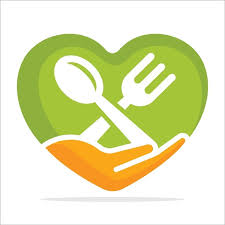

SDG 2
Zero Hunger
- Connects surplus meals with orphanages in real time.
- Tracks quantity & timing to meet immediate needs.
- Verification reduces missed deliveries and waste.

FoodConnectUN SDG 2: Zero Hunger
FoodConnect bridges orphanages, food donors (restaurants, hotels, schools), and volunteers to reduce waste and deliver meals with care.
Meals shared
Requests verified
Volunteers engaged
Stakeholders connected
* Live counters show after deployment connects to Firestore.
Donors post surplus food; orphanages publish needs; volunteers help move meals. Verified requests build trust and safety.
Restaurants, hotels, schools post surplus food with quantity, pickup time, and location.
Share needs and dietary notes; browse nearby donors; send requests with one click.
Coordinate pickup & delivery; message orphanages; help verify successful handovers.
Posts and requests gain a verified badge—improving reliability and faster matching.
We’re aligned with multiple SDGs. Here’s how our workflows map to them.